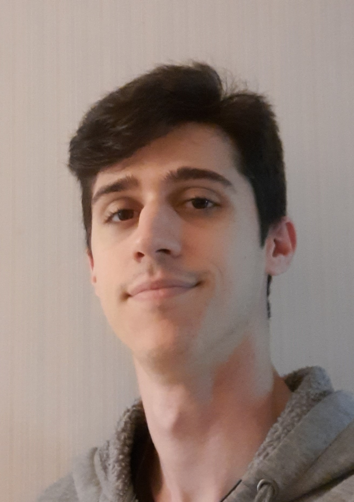

The Dev Cave - Unity Tutorials
Una web con tutoriales de Unity 2D para desarrolladores de videojuegos. Cubre sistemas de juego, mecánicas y buenas prácticas de desarrollo para estudiantes y aficionados.
// Programador de videojuegos & Profesor
PROGRAMADOR DE VIDEOJUEGOS & PROFESOR DE PROGRAMACIÓN
Soy un programador apasionado graduado en ENTI-UB Barcelona,
con sólidos conocimientos en C, C++ y C#. También creo juegos con Unity
y Unreal Engine 5, y me encanta convertir ideas en experiencias interactivas.
Siempre comprometido con el código limpio y los principios SOLID, así como con echar una mano a quien lo necesite.
Cuento también con experiencia en resolución de problemas y pruebas de QA.

Una web con tutoriales de Unity 2D para desarrolladores de videojuegos. Cubre sistemas de juego, mecánicas y buenas prácticas de desarrollo para estudiantes y aficionados.
Juego clásico del Tres en Raya escrito en C++17 con SFML 3.0. El desarrollo se centró en seguir los principios SOLID.
Iniciativa de kit educativo basada en el aprendizaje STEAM con modelos impresos en 3D e interacciones NFC. Ofrece un diseño inclusivo para estudiantes con discapacidad visual, centrado en la exploración de texturas macro-micro.
Colaboración entre ENTI-UB,
Institut de Desenvolupament Professional,
xarxa d'Ateneus de Fabricació de Barcelona,
Associació Catalana per a la Promoció de l'Accessibilitat,
Universidad Complutense de Madrid y
CREDV-ONCE.
Juego survival horror en el que te encuentras atrapado en una estación espacial en ruinas. Ábrete paso por las instalaciones para descubrir qué ocurrió y cómo estás relacionado con estos sucesos.
Una experiencia VR en 3D que muestra algunas de las nuevas instalaciones de ENTI-UB.
Proyecto basado en emociones que utiliza sensores biométricos y gafas VR.
FPS de plataformas ambientado en el Salvaje Oeste y la ciencia ficción. Los alienígenas han invadido la galaxia y el jugador, miembro del Gremio de los Forajidos, debe abrirse paso haciendo parkour entre los invasores, intentando batir cada vez su récord personal.
Los roles se invierten en una casa encantada: ¡ahora eres el fantasma! Asusta a los visitantes de tu mansión y resuelve rompecabezas disparatados para descubrir el misterio de tu muerte.